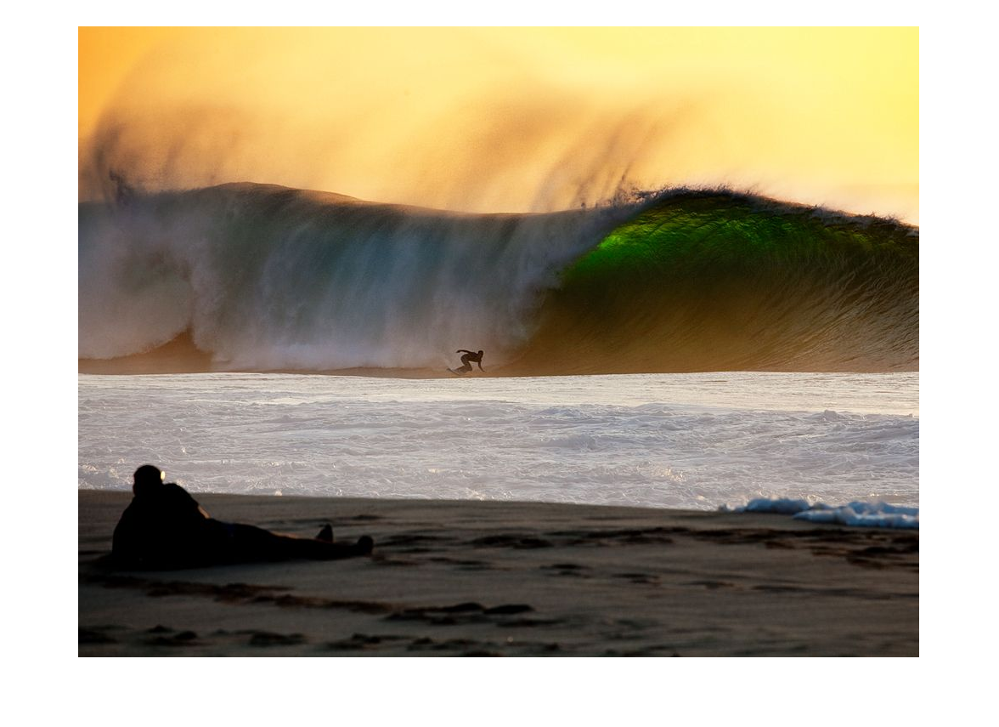
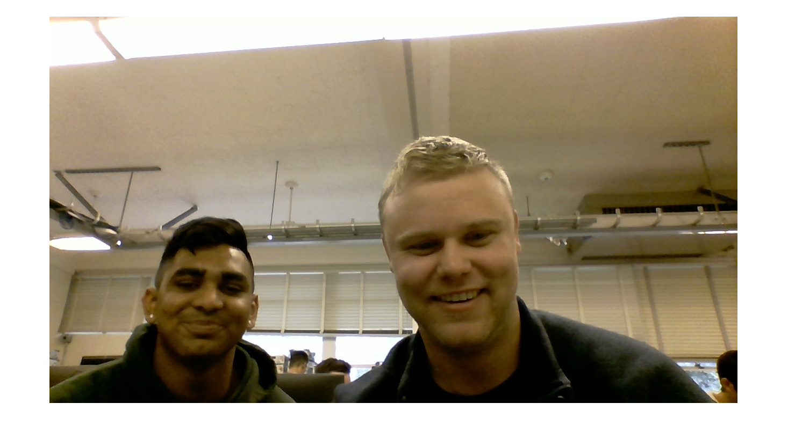
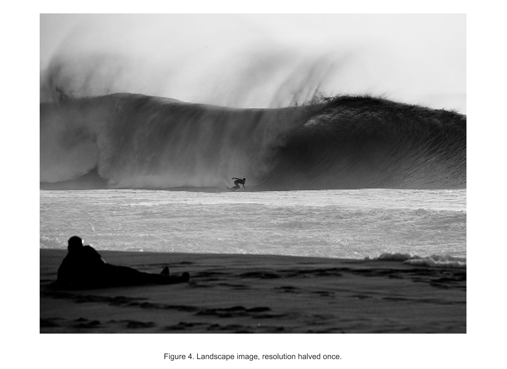
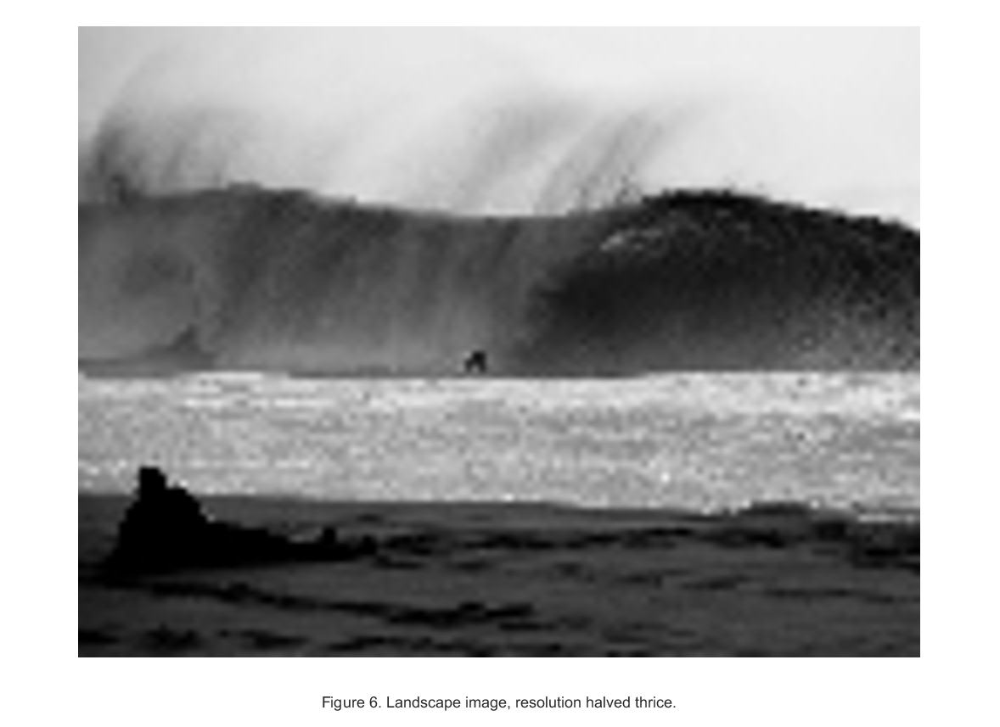
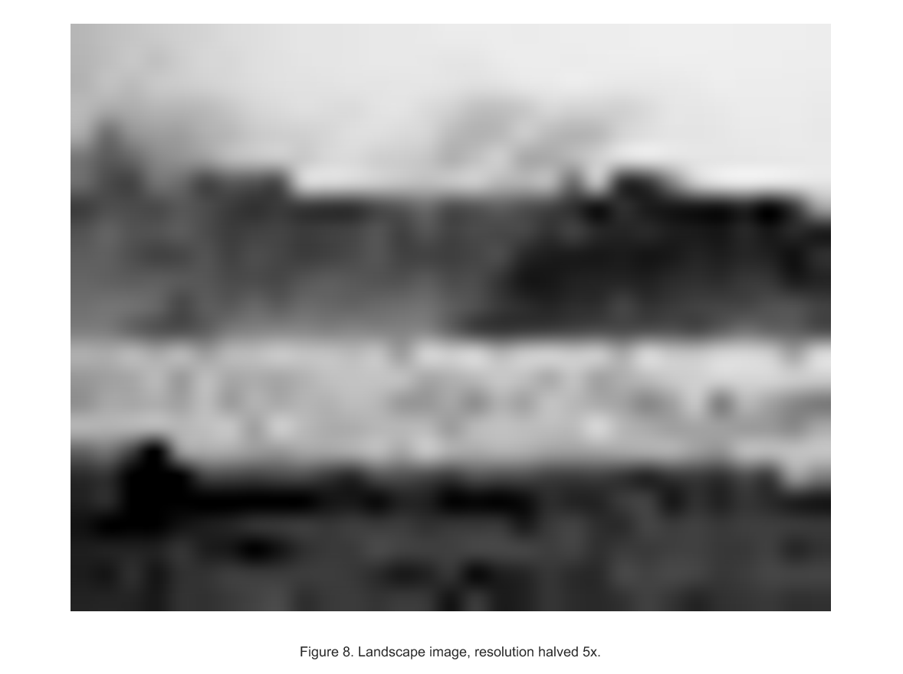
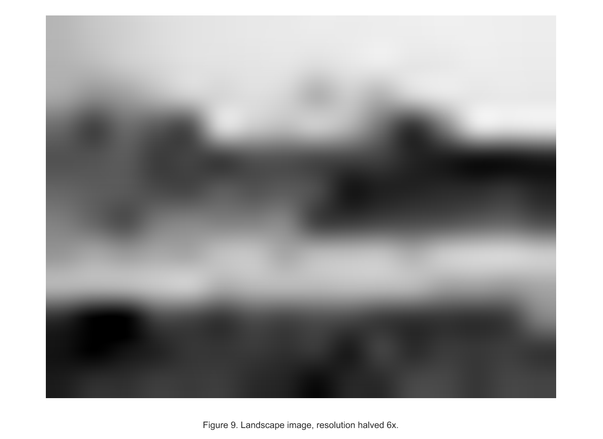
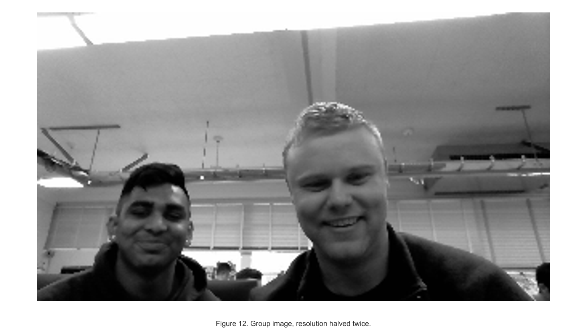
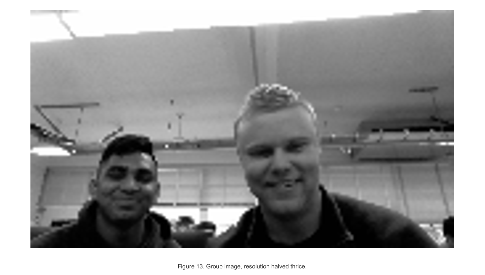
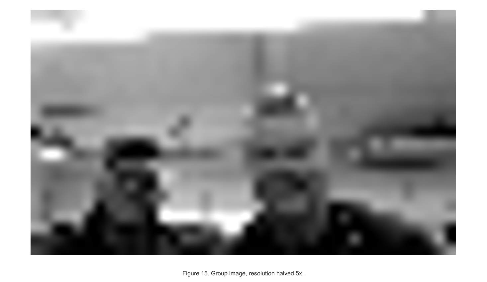
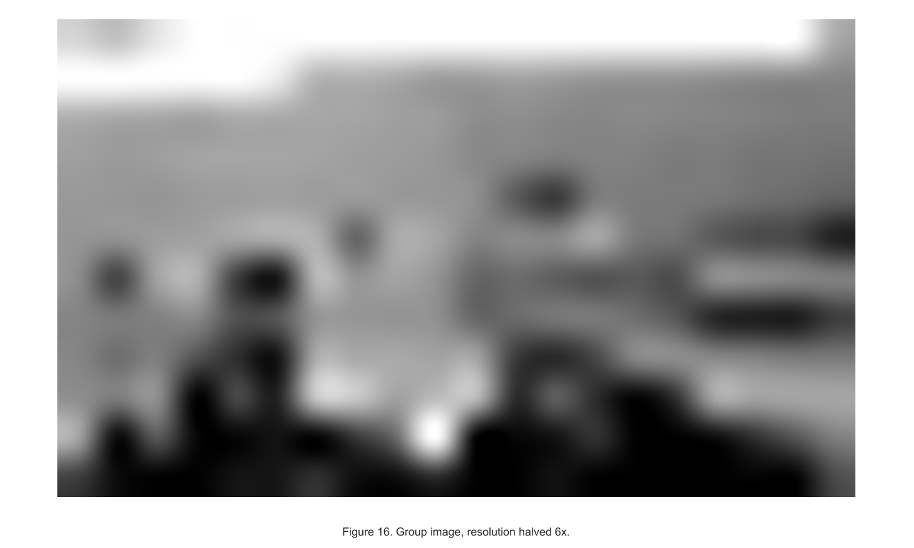

Contents
Computer Vision Project 1
Alec Hardy and Nikhil Patolia
1/9/2020
clc;
clearvars;
Part A
im1 = imread('landscape.jpg');
im2 = imread('group.jpg');
figure(1);
imshow(im1);
figure(2);
imshow(im2);
im1_g = rgb2gray(im1);
im2_g = rgb2gray(im2);
max1 = max(max(im1_g));
max1 = max1(1);
[Xmax1, Ymax1] = find(im1_g==max1);
max2 = max(max(im2_g));
max2 = max2(1);
[Xmax2, Ymax2] = find(im2_g==max2);
min1 = min(min(im1_g));
min1 = min1(1);
[Xmin1, Ymin1] = find(im1_g==min1);
min2 = min(min(im2_g));
min2 = min2(1);
[Xmin2, Ymin2] = find(im2_g==min2);
fprintf('Image 1: Max Pixel Val: %3d (%.3f); Location: (%d, %d)\n', max1, double(max1)/255, Xmax1(1), Ymax1(1));
fprintf(' Min Pixel Val: %3d (%.3f); Location: (%d, %d)\n\n', min1, double(min1)/255, Xmin1(1), Ymin1(1));
fprintf('Image 2: Max Pixel Val: %3d (%.3f); Location: (%d, %d)\n', max2, double(max2)/255, Xmax2(1), Ymax2(1));
fprintf(' Min Pixel Val: %3d (%.3f); Location: (%d, %d)\n\n', min2, double(min2)/255, Xmin2(1), Ymin2(1));
fprintf('Image 1 grayscale (UINT8) size: %d bytes\n', size(im1_g,1)*size(im1_g,2));
fprintf('Image 2 grayscale (UINT8) size: %d bytes\n', size(im2_g,1)*size(im2_g,2))
img1_c1 = halve_mat(im1_g);
img1_c2 = halve_mat(img1_c1);
img1_c3 = halve_mat(img1_c2);
img1_c4 = halve_mat(img1_c3);
img1_c5 = halve_mat(img1_c4);
img1_c6 = halve_mat(img1_c5);
figure();
imshow(im1_g);
xlabel("Figure 3. Landscape original image. No resolution change.");
figure();
imshow(imresize(img1_c1, 2));
xlabel("Figure 4. Landscape image, resolution halved once.");
figure();
imshow(imresize(img1_c2, 4));
xlabel("Figure 5. Landscape image, resolution halved twice.");
figure();
imshow(imresize(img1_c3, 8));
xlabel("Figure 6. Landscape image, resolution halved thrice.");
figure();
imshow(imresize(img1_c4, 16));
xlabel("Figure 7. Landscape image, resolution halved 4x");
figure();
imshow(imresize(img1_c5, 32));
xlabel("Figure 8. Landscape image, resolution halved 5x.");
figure();
imshow(imresize(img1_c6, 64));
xlabel("Figure 9. Landscape image, resolution halved 6x.");
img2_c1 = halve_mat(im2_g);
img2_c2 = halve_mat(img2_c1);
img2_c3 = halve_mat(img2_c2);
img2_c4 = halve_mat(img2_c3);
img2_c5 = halve_mat(img2_c4);
img2_c6 = halve_mat(img2_c5);
figure();
imshow(im2_g);
xlabel("Figure 10. Group original image. No resolution change.");
figure();
imshow(imresize(img2_c1, 2));
xlabel("Figure 11. Group image, resolution halved once.");
figure();
imshow(imresize(img2_c2, 4));
xlabel("Figure 12. Group image, resolution halved twice.");
figure();
imshow(imresize(img2_c3, 8));
xlabel("Figure 13. Group image, resolution halved thrice.");
figure();
imshow(imresize(img2_c4, 16));
xlabel("Figure 14. Group image, resolution halved 4x.");
figure();
imshow(imresize(img2_c5, 32));
xlabel("Figure 15. Group image, resolution halved 5x.");
figure();
imshow(imresize(img2_c6, 64));
xlabel("Figure 16. Group image, resolution halved 6x.");
Image 1: Max Pixel Val: 252 (0.988); Location: (500, 125)
Min Pixel Val: 0 (0.000); Location: (711, 1)
Image 2: Max Pixel Val: 255 (1.000); Location: (420, 7)
Min Pixel Val: 0 (0.000); Location: (697, 117)
Image 1 grayscale (UINT8) size: 734580 bytes
Image 2 grayscale (UINT8) size: 921600 bytes
       

 
Part B